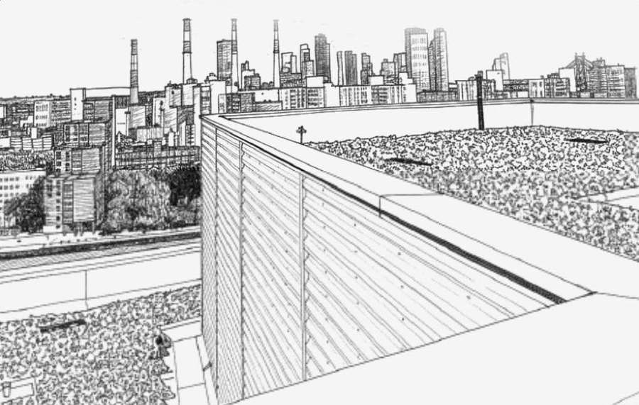

Plate 01 — Crosshatch
Plate 02 — Survey
Plate 04 — Elevation
CLICK — RESTRIKE PLATE
KNS · PLATE 13
PROPOSED

SCOPE REVIEW · W-1 PARAPET
II — THE FACADE


SCROLL
SIDEWALK SHED · PERMIT 4471
SCROLL TO RAISE
DUSK CYCLE — HOLD TO SETTLE
HAVEMEYER WAREHOUSE
BROOKLYN · EST. 1911
KNS
SURVEY SHEET — 24-081
FISP CYCLE9B
REPOINTED1,240 LF
TERRACOTTA REPLACED86 UNITS
HOVER / TAP TO FLIP
0
45
90
135
180
225
270
315
Drone Survey4 spall returns
NYC Roofline Survey
Flat Parapet
KNS Restoration — Est. 1987
RESTORING
NEW YORK’S
FACADES
Click to replay
Site Tally — 2026 Season
HOVER TO REVERSE
NYC DEPT. OF BUILDINGS · WORK PERMIT
CLICK TO RE-DECODE
RESTORATION SERVICES